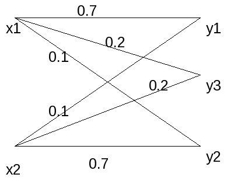
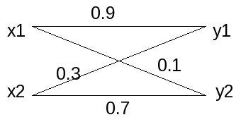

| Author: | Soukthavy Sopha |
|---|---|
| Contact: | soukthavy@yahoo.com |
| Organization: | self |
| Status: | Lean to convert the LaTex of IEEE format to reST using my old class homework. |
| Revision: | 0.1 |
| Copyright: | None |
Abstract
The Arimoto-Blahut algorithm is the algorithm used to solve the convex optimization problem for the maximum capacity of a discrete memoryless channel. We will implement their algorithm with MATLAB script to solve the given problem.
1 Introduction
For the discrete memoryless channel, Shannon's maximum channel capacity is:
where X and Y are random variable representing the input and output respectively. The optimization is taken all over the input probability distribution \(p = (p_1 \cdots p_n)\) with the constraints \(p_i \ge 0, \sum_{j=1}^{n}p_j = 1\) and the mutual information is defined as:
The optimal \(p\) gives the distribution on the input symbol required to achieve the channel capacity.
2 Description of the algorithm
We reformulate the algorithm by introducing variable \(\phi(y_j,x_i)\), and define:
and for fix \(p\)
where we attain at
and the channel capacity
for fixed \(p, max_p J(p,P,\phi)\) is maximized when
The algorithm is to alternatingly finding the optimal \(\phi\) for a given \(p\) and the optimal \(p\) for a given \(\phi\)
2.1 Implementation
- Choose an initial \(p^i\) vector then iterate the following steps from \(t=1,2,\cdots\)
- Maximize \(J(p^t,P,\phi)\) with respect to \(\phi\). The maximized \(\phi\) \(\phi_j^t = \frac{p(i|j)p_j^t}{\sum_{k=1}^{n}p(i|k)p_k^t}, for j=1 \cdots n\)
- Maximize \(J(p,P,\phi^t)\) with respect to \(p\) by
where
3 Problems
The transition probability for Fig 1 is:
Maximum channel capacity = 0.365148
The transition probability for Fig 2 is
Maximum channel capacity = 0.773684
The transition probability for Fig 3 is:
Maximum channel capacity = 0.296672
4 Conclusion
This exercise gives us a good examples on solving the discrete memoryless channel for its optimum value of probability distribution to achieve the maximum channel capacity.
5 Bibliography
| [CIT002] | Lawrence Ip, The Blahut-Arimoto Algorithm for the Calculation of the Capacity of a Discrete memoryless channel, December 10 1999. |
| [CIT003] | H.~Kopka and P.~W. Daly, emph{A Guide to LaTeX}, 3rd~ed.hskip 1em plus 0.5em minus 0.4emrelax Harlow, England: Addison-Wesley, 1999. |
| [CIT004] | Various books and articles from various authors |